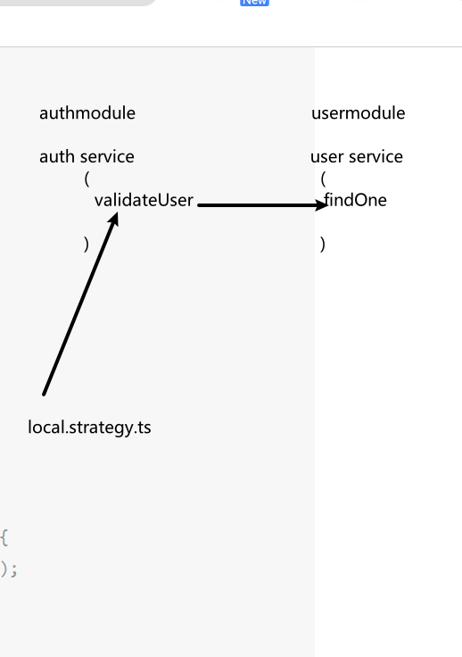

周任务二
周四
一.算法
- 验证回文字符串 Ⅱ 给定一个非空字符串 s，最多删除一个字符。判断是否能成为回文字符串。
示例 1:
输入: s = "aba" 输出: true 示例 2:
输入: s = "abca" 输出: true 解释: 你可以删除 c 字符。 示例 3:
输入: s = "abc" 输出: false
思路: 与验证回文字符串思路一样,双指针, 一前一后. 跳过一个数字,是回文字符串 return true
var validPalindrome = function (s) {
function isValid(left, right) {
while (left < right) {
if (s[left] !== s[right]) {
return false;
}
left++;
right--;
}
return true;
}
let left = 0;
let right = s.length - 1;
while (left < right) {
if (s[left] !== s[right]) {
return isValid(left + 1, right) || isValid(left, right - 1);
}
left++;
right--;
}
return true;
};
console.log(validPalindrome('abca'));
- 重复的 DNA 序列 DNA 序列 由一系列核苷酸组成，缩写为 'A', 'C', 'G' 和 'T'.。
例如，"ACGAATTCCG" 是一个 DNA 序列 。 在研究 DNA 时，识别 DNA 中的重复序列非常有用。
给定一个表示 DNA 序列 的字符串 s ，返回所有在 DNA 分子中出现不止一次的 长度为 10 的序列(子字符串)。你可以按 任意顺序 返回答案。
示例 1：
输入：s = "AAAAACCCCCAAAAACCCCCCAAAAAGGGTTT" 输出：["AAAAACCCCC","CCCCCAAAAA"] 示例 2：
输入：s = "AAAAAAAAAAAAA" 输出：["AAAAAAAAAA"]
思路 搞一个 map 存结果,一次取 10 个
/**
* @param {string} s
* @return {string[]}
*/
var findRepeatedDnaSequences = function (s) {
// 搞一个map 用来记录个数
let map = new Map();
// res用来储存结果
let res = [];
for (let i = 0; i <= s.length - 10; i++) {
// 截取字符串
let str = s.substr(i, 10);
// 如果map中有
if (map.has(str)) {
// 更新个数
map.set(str, map.get(str) + 1);
// 如果个数超过两个就 向res中push结果
if (map.get(str) === 2) {
res.push(str);
}
} else {
// 如果没有就设置个数为 1
map.set(str, 1);
}
}
// 返回结果
return res;
};
二.nest 掘金
已完成
代码地址:https://github.com/wu-yu-pei/nest-.git
三.nest 文档
已读 next 安全部分
中文地址: https://docs.nestjs.cn/8/security 官网地址: https://docs.nestjs.com/security/authentication 
四.nuxt 文档
已读
roter 部分 暂时未翻译
----本文结束----
 周任务三
周任务三